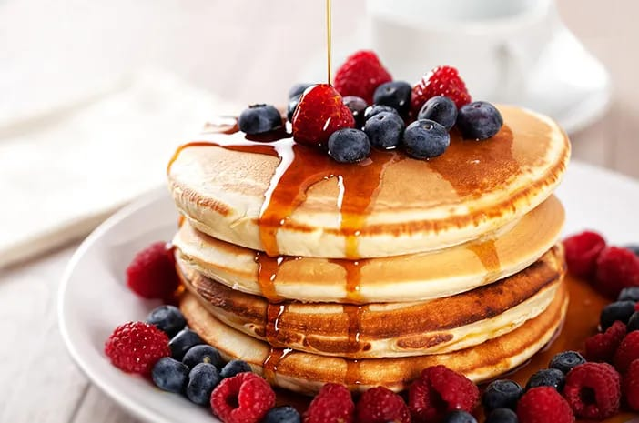

Resep Penutup Makanan

Pudding Cheese Cake
Bahan-bahan:
- 200 gram biskuit marrie
- 100 gram mentega
- 200 gram cream cheese
- 100 gram gula pasir
- 200 ml whipped cream
- 1 sachet agar-agar
- 500 ml air
Cara Membuat:
- Hancurkan biskuit marrie dan campur dengan mentega, lalu tekan ke dasar cetakan.
- Kocok cream cheese, gula, dan whipped cream hingga halus.
- Masak agar-agar dengan air hingga mendidih, lalu campurkan ke adonan cream cheese.
- Tuang adonan ke atas biskuit dan dinginkan di kulkas hingga mengeras.

Pancake
Bahan-bahan:
- 200 gram tepung terigu
- 1 butir telur
- 200 ml susu cair
- 2 sdm gula pasir
- 1 sdt baking powder
- 1/4 sdt garam
- Butter secukupnya untuk memasak
Cara Membuat:
- Campurkan semua bahan kering, kemudian tambahkan telur dan susu cair, aduk hingga rata.
- Panaskan wajan dan beri sedikit butter, lalu tuang adonan ke dalam wajan.
- Masak pancake hingga kedua sisi kecoklatan, sajikan dengan topping sesuai selera.

Brownies Coklat
Bahan-bahan:
- 200 gram coklat batang
- 100 gram mentega
- 150 gram gula pasir
- 3 butir telur
- 100 gram tepung terigu
- 1/2 sdt baking powder
Cara Membuat:
- Cairkan coklat dan mentega, aduk hingga rata.
- Tambahkan gula pasir, telur, tepung, dan baking powder, aduk hingga tercampur rata.
- Tuang adonan ke dalam loyang dan panggang selama 30 menit pada suhu 180°C.

Salad Buah Jelly
Bahan-bahan:
- 1 bungkus jelly
- 1 buah apel, potong dadu
- 1 buah pisang, potong
- 1/2 buah melon, potong
- 100 gram anggur
- 1 sdm madu
Cara Membuat:
- Buat jelly sesuai petunjuk kemasan, biarkan mengeras.
- Campurkan semua buah potong, tambahkan madu, dan sajikan dingin.